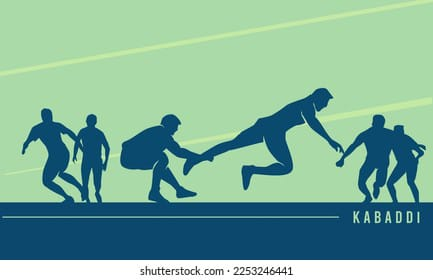

Information of Kabaddi

-
Kabaddi :-
-
-
Kabaddi (/kəˈbædi/,[2] /ˈkʌbədi/)[3] is a contact team sport played between two teams of seven players, originating in ancient India.
-
The objective of the game is for a single player on offence, referred to as a "raider", to run into the opposing team's half of the court, touch out as many of their players as possible, and return to their own half of the court, all without being tackled by the defenders in 30 seconds.
-
Points are scored for each player tagged by the raider, while the opposing team earns a point for stopping the raider. Players are taken out of the game if they are touched or tackled, but return to the game after each point scored by their team from a tag or tackle.